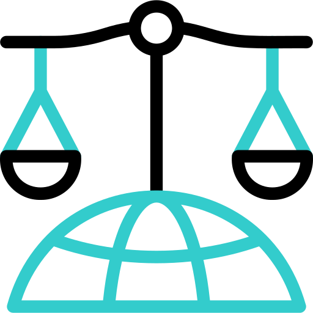

Stage 1
Idea Generation
Generating, refining, and evaluating novel research hypotheses.

Awesome AI Auto-Research Team A practitioner's guide to AI across the complete academic research lifecycle — from idea generation to dissemination.
A fully automated AI system as of today can generate a research paper for as little as $15 — yet, under scientific pressure, even frontier LLMs still fabricate results, miss hidden errors, and fail to judge novelty reliably. This capability-vs-integrity tension defines the current moment in AI-assisted research.
Surveying developments through April 2026, we present an end-to-end analysis of AI across the complete research lifecycle, organizing eight stages into four epistemological phases:
Ideation, literature, code & experiments, figures & tables
Manuscript drafting, editing, and polishing
Peer review, rebuttal & revision
Posters, slides, video, social media
Across this lifecycle we identify a sharp but stage-dependent boundary between reliable assistance and unreliable autonomy. AI is increasingly effective for structured, retrieval-grounded, and tool-mediated tasks, but remains fragile when asked to produce genuinely novel ideas, execute research-level experiments, or replace scientific judgment — making human-governed collaboration the most credible deployment paradigm today. Effective auto-research pipelines converge toward layered designs that combine exploration, execution, and verification.
We organize the academic research lifecycle as eight interconnected stages grouped into four epistemological phases. Each phase serves a distinct function in producing, scrutinizing, and communicating scientific knowledge.
From spark to substance: ideation grounded in the literature, executed in code, and rendered as figures and tables. This is where AI's promise — and its capability boundary — is most visible.
Generating, refining, and evaluating novel research hypotheses.

Retrieving, synthesizing, and organizing prior work into coherent contexts.

Translating ideas into executable code and running empirical analyses.

Constructing diagrams, plots, and tables from raw outputs and designs.
Writing is not a formatting step — it is a rhetorical and evidential organization process that requires distinct AI capabilities from those used to produce code, experiments, or figures.

Drafting, editing, polishing, and structuring academic manuscripts — from grammar correction and citation support to section-level drafting and full-paper generation.
Together, peer review and rebuttal form the community-facing mechanism through which scientific claims are challenged, defended, and revised — not a bureaucratic afterthought, but the verification layer of research.

Generating structured reviews, matching reviewers, and assessing review quality.

Analyzing reviewer comments, gathering evidence, and drafting revisions.
Posters, slides, video, project pages, and social-media summaries are independent knowledge artifacts with their own fidelity and trust requirements — not appendages to the paper.

Converting papers into posters, slides, videos, project pages, demos, and social media content — each format with its own audience and design constraints.
Three meta-level findings emerge across all stages of the AI auto-research pipeline.
The capability boundary is sharp.
Research-level code success ceiling, vs. 80% on pattern-matching benchmarks.
More automation hides more failure.
LLM reviewers misclassify rejected papers as acceptable. Human-governed collaboration wins.
Architecture beats scale.
Layered designs — exploration, execution, verification — with 3-4 agent teams.
Ideas collapse on execution.
Quality scores drop after human implementation.
Cost decouples from quality.
Higher compute budget no longer guarantees better papers.
AI contamination is pervasive.
CS papers with detectable AI modification — time to declare, not just detect.
A virtual gallery of research posters generated by frontier AI models for this survey. Each poster is produced end-to-end by a different system, showcasing the current state of automated scientific dissemination.
We maintain a continuously updated reading list of papers on AI-assisted and automated scientific research, covering the full research pipeline. Browse the complete collection on our GitHub repository.
If you find this survey or the reading list useful, please consider citing our work:
@article{survey-ai-auto-research,
title = {{AI} for Auto-Research: Roadmap \& User Guide},
author = {},
journal = {arXiv preprint arXiv:YOUR\_ARXIV\_ID},
year = {2026}
}